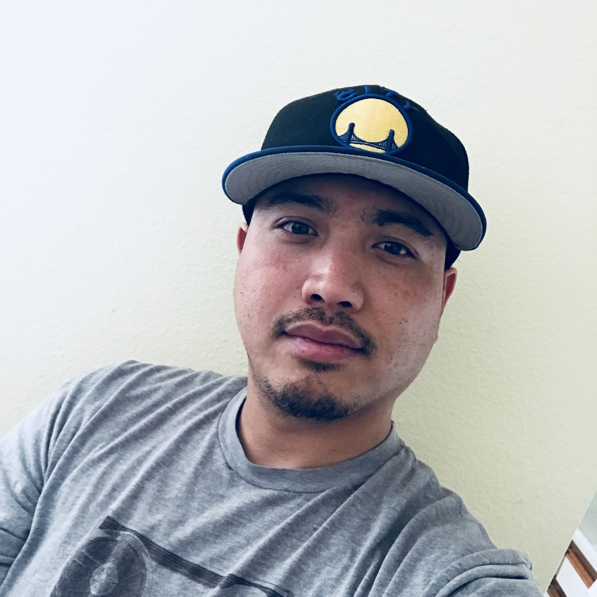

About Me

I was born on Febuary 11, 1983 in San Francisco, California. I lived in San Francisco for a few years until I moved to a city called Hercules where I spent the rest of my childhood/teen life. Growing up my hobbies were creating music, graphic designing, sports, snowboarding, and building things. What stood out the most was my ability to create music, designing, and being athletic. After high school I then atteneded a junior college which didn't pan out the way I wanted it to, so I decided to get full time job for few years until I decided to go to The Conservatory of Recording Arts and Sciences in 2011. There I learned the aspects of being a audio engineer and it allowed me to show my creativitiy and art.
After I graduated I interned at a professional studio called The Mix Room. There I learned how studios operate on a day to day basis and I had the opportunity to meet incridible engineers in the industry who gave me a few pointers as I sat in their sessions. After my intern I became a freelance audio engineer for a few years, however it wasn't finanically consistant, so I wanted the change my career path. Being a creative and technical person, I wanted to try something new so I started my journey into becoming a full stack web developer.